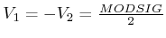
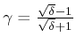
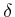

Next: phase_modulator Up: List of Functions Previous: linear_modulator
Modulate the optical field with a Mach-Zehnder Interferometer
E=MZ_MODULATOR(E,MODSIG)
E=MZ_MODULATOR(E,MODSIG,OPTIONS)
E=MZ_MODULATOR(E,MODSIG) modulates the optical field E using a Mach-Zehnder interferometer [13]. The parameter MODSIG is the electrical driving signal produced by electricsource. The model of the Mach-Zehnder is the same as in [13]:
where  ,  and  is the extinction ratio in linear units.
E=MZ_MODULATOR(E,MODSIG,OPTIONS) can modify the parameters of the Mach-Zehnder modulator. OPTIONS is an optional structure whose fields can be:
electricsource, lasersource, linear_modulator , phase_modulator
This function implements the model proposed in [13] and a technique used to minimize the effect of chirp in presence of finite extinction ratio and presented in [14].
Optilux toolbox reference manual